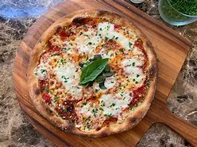

Margherita pizza

Description
Margherita pizza is a classic Italian pizza that consists of a thin, crispy crust topped with tomato sauce, fresh
mozzarella cheese, and fresh basil leaves. It is a simple and flavorful pizza that showcases the quality and freshness
of the ingredients. The tomato sauce is made from San Marzano tomatoes, which are known for their sweet and tangy
flavor, and the mozzarella cheese is usually made from buffalo milk for an extra creamy texture. The pizza is named
after Queen Margherita of Savoy, who sampled the dish on a visit to Naples in 1889 and declared it her favorite.
Margherita pizza has since become a beloved dish worldwide, and is often considered a benchmark of quality for
pizzerias.
Ingredients
For the pizza dough:
- 3 cups all-purpose flour
- 1 teaspoon instant yeast
- 1 teaspoon salt
- 1 tablespoon olive oil
- 1 cup warm water
For the toppings:
- 1 cup tomato sauce
- 8 ounces fresh mozzarella cheese, sliced
- 1/4 cup grated Parmesan cheese
- Fresh basil leaves
Instructions
- In a large mixing bowl, combine the flour, yeast, and salt. Add the olive oil and warm water, and stir until a shaggy
dough forms.
- Knead the dough on a floured surface for 10-15 minutes, until it becomes smooth and elastic.
- Place the dough in a clean, oiled bowl, cover it with a damp towel, and let it rise in a warm, draft-free place for 1-2
hours, until it has doubled in size.
- Preheat the oven to 450°F (230°C) and place a pizza stone in the oven to heat up.
- Roll out the dough on a floured surface until it is about 1/4 inch thick.
- Spread the tomato sauce over the dough, leaving a small border around the edge.
- Arrange the sliced mozzarella over the tomato sauce, and sprinkle the grated Parmesan cheese over the top.
- Bake the pizza on the pizza stone for 10-12 minutes, until the crust is golden brown and the cheese is melted and
bubbly.
- Remove the pizza from the oven and let it cool for a few minutes.
- Garnish with fresh basil leaves, slice, and serve hot.
Enjoy your delicious Margherita pizza!